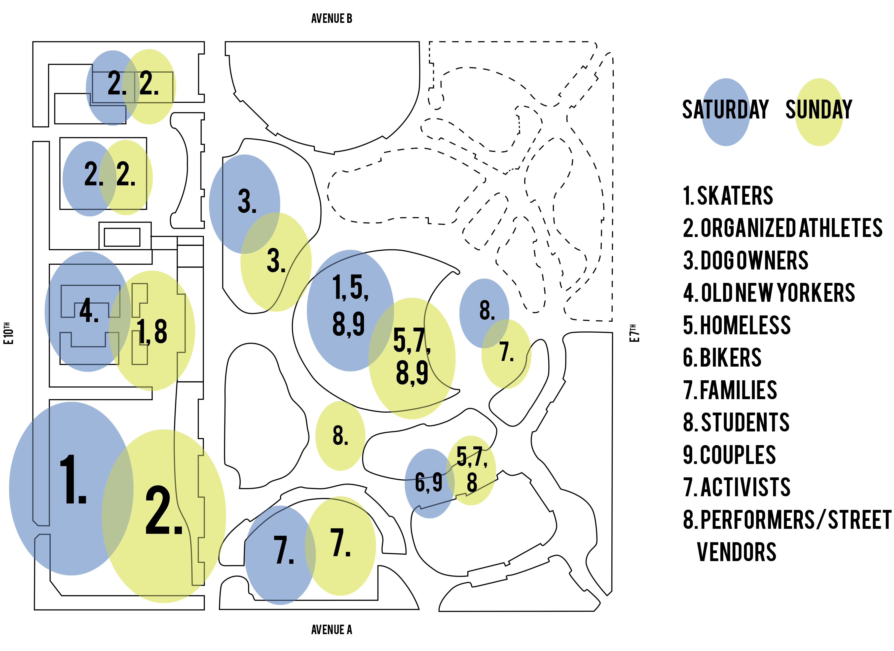

Instruction Sets for Strangers
bfa projects | parsons
Instruction sets for strangers challenges students to design physical interventions in a public space that instructs interaction without any verbal or written cues. My team chose Tompkins Square Park in the East Village.
Research
Through a combination of on site and digital research we found complex history of protests that grew in the mid 1900’s when “...the most radical transformation here took place starting in the late 1950s, with the introduction of ‘hippie’ culture and infusion of youth and music” (The Bowery Boys: New York City History). The results of these protests are still seen today in the diverse crowd that continues to fill the park. Skaters make up a large part of this crowd, despite the parks attempt drive them away with a hostile design plan to cover the area they use with turf.
"
...the most radical transformation here took place starting in the late 1950s, with the introduction of ‘hippie’ culture and infusion of youth and music”
(The Bowery Boys: New York City History).
"
First Iteration

Our goal in the first iteration was to test out interaction in the park with physical objects, of various sizes, when placed in different locations of the park. We collected cardboard boxes and newspaper from our apartment buildings which we constructed and set up as building blocks.
Our goal in the first iteration was to test out interaction in the park with physical objects, of various sizes, when placed in different locations of the park. We collected cardboard boxes and newspaper from our apartment buildings which we constructed and set up as building blocks.
Findings
Due to observed hesitance by a mixture of people that passed and appeared to think the blocks are meant to be a sculpture rather than an interactive piece, we concluded that we could prevent this with more large boxes and a less constructed setup.
Second Iteration

While our original plan had been to cover the boxes in turf and set them in and around the skater area, we decided to test the new scale and setup before spending the money on turf. After successfully sourcing and constructing the additional large boxes, the unpredictable weather of New York surprised us with a down pour of rain, clearing the crowds almost instantly. This taught our team a whole new set of lessons, especially in materiality and the importance of sourcing waterproof materials.
Team Members:
Gabriella Ortiz
Michelle Nee
Haneu(l) Bakz
Michelle Nee
Haneu(l) Bakz